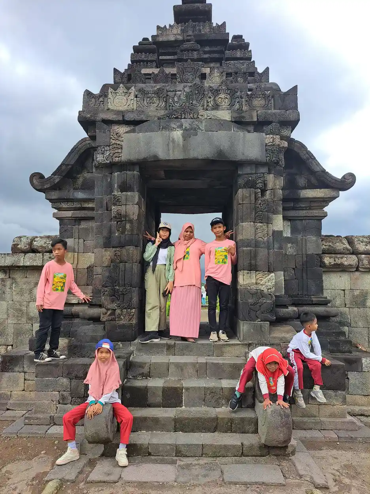
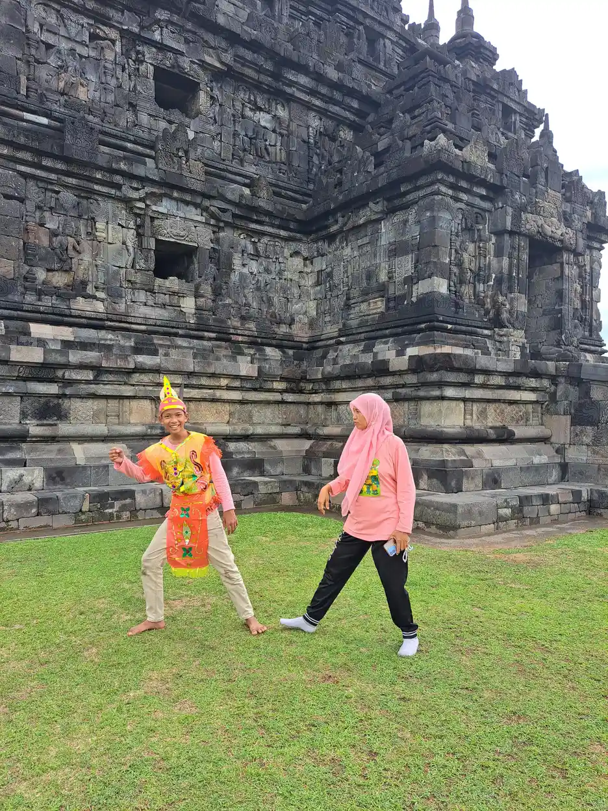
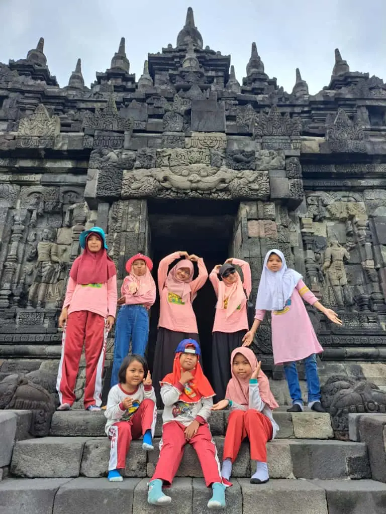
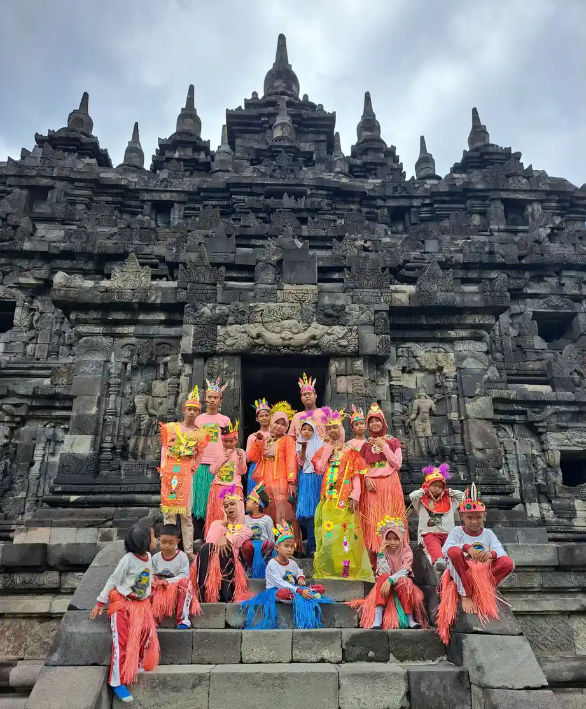

Jawaban singkat: Terapi perilaku untuk autisme mencakup berbagai pendekatan, bukan satu paket wajib. Pilih dukungan berdasarkan asesmen, tujuan fungsional, komunikasi, kenyamanan, dan persetujuan anak. Dukungan tidak bertujuan menghapus identitas autistik.
Daftar Isi
- Mulai dari kebutuhan anak, bukan nama metode
- Asesmen klinis mendahului rencana perilaku
- ABA: kerangka belajar, bukan satu bentuk sesi
- DTT, EIBI, dan pembelajaran komunikasi fungsional
- Pendekatan perkembangan perilaku naturalistik
- Dukungan perilaku positif mencari fungsi kebutuhan
- Terapi wicara dan AAC bukan nama lain ABA
- Tabel membandingkan tujuan, bukti, dan keamanan
- Pendampingan orang tua tanpa mengubah rumah menjadi klinik
- Adaptasi sekolah adalah bagian dukungan, bukan hadiah
- Persetujuan, neurodiversitas, dan tanda program tidak aman
- Evaluasi manfaat, beban, dan langkah berikutnya
- Pertanyaan umum
Mulai dari kebutuhan anak, bukan nama metode
Pertanyaan apa saja terapi perilaku untuk autisme sebaiknya dijawab dengan melihat kebutuhan nyata anak. Pendekatan yang dapat dibahas meliputi analisis perilaku terapan atau ABA, pembelajaran terstruktur, intervensi perkembangan perilaku naturalistik, serta dukungan perilaku positif berdasarkan fungsi perilaku. Untuk sebagian anak, dukungan komunikasi, pendampingan orang tua, penyesuaian sekolah, atau terapi psikologis bagi kecemasan justru menjadi prioritas. Semuanya tidak harus diberikan bersamaan.
Autisme merupakan kondisi perkembangan saraf dengan kebutuhan dukungan yang beragam. Tujuan pendampingan bukan menyembuhkan autisme atau membuat anak terlihat tidak autistik, melainkan memperluas komunikasi, keselamatan, kemandirian, kenyamanan, dan kesempatan berpartisipasi. Memahami pengertian autisme membantu keluarga membedakan kebutuhan bantuan dari perbedaan yang tidak perlu diubah.
Contoh tujuan bermakna adalah anak mempunyai cara untuk meminta jeda ketika ruang kelas terlalu ramai. Tujuan yang kurang tepat adalah anak harus selalu diam meskipun sedang kesakitan. Keberhasilan perlu dinilai dari manfaat bagi anak, bukan hanya dari kemudahan orang dewasa mengatur kegiatan. Pengalaman dan pilihan anak tetap diperhitungkan, termasuk ketika ia belum berbicara. Istilah anak autistik atau anak dengan autisme dapat mengikuti preferensi individu dan keluarga tanpa mengurangi penghormatan terhadap dirinya.
Asesmen klinis mendahului rencana perilaku
Sebelum memilih program, keluarga perlu berkonsultasi dengan tenaga profesional yang kompeten sesuai kebutuhan, misalnya dokter anak yang menangani tumbuh kembang, psikolog, terapis wicara, atau terapis okupasi. Asesmen membahas perkembangan, komunikasi, kesehatan, aktivitas sehari-hari, minat, dan pengalaman anak di rumah maupun sekolah. Diagnosis saja tidak memberi petunjuk lengkap tentang kegiatan yang paling dibutuhkan.
NICE meminta tenaga profesional menilai faktor komunikasi, nyeri atau gangguan fisik, kecemasan, kondisi sensorik, serta perubahan rutinitas ketika perilaku menjadi sulit ditangani. Anak yang tiba-tiba memukul kepala mungkin membutuhkan pemeriksaan nyeri, bukan tambahan latihan duduk. Catatan sederhana mengenai apa yang terjadi sebelum, selama, dan sesudah kejadian dapat membantu diskusi, tetapi keluarga tidak perlu melakukan uji yang sengaja memancing distress.
Bawalah contoh situasi yang konkret, seperti kesulitan menyampaikan ingin ke toilet atau kewalahan saat bel sekolah berbunyi. Diskusikan pula kemampuan yang sudah dimiliki. Daftar pilihan dukungan anak berkebutuhan khusus dapat menjadi bahan pertanyaan, bukan daftar belanja terapi. Bila ada kehilangan keterampilan, perubahan mendadak, atau masalah kesehatan yang menetap, penilaian medis perlu diprioritaskan. Rencana harus ditinjau kembali ketika kebutuhan berubah, bukan dipertahankan hanya karena paket layanan belum selesai.

ABA: kerangka belajar, bukan satu bentuk sesi
Applied Behavior Analysis atau ABA menggunakan prinsip belajar untuk memahami hubungan perilaku dengan lingkungan dan membantu pengembangan keterampilan. CDC menjelaskan bahwa kemajuan dalam pendekatan perilaku dilacak dan diukur. Namun, ABA adalah payung pendekatan, bukan sinonim satu teknik, satu meja belajar, atau kewajiban mengikuti instruksi tanpa pertanyaan.
Dalam program yang berorientasi kebutuhan, target bisa berupa meminta bantuan, menggunakan alat makan, atau mengenali langkah keselamatan. Penguatan positif berarti sesuatu yang membuat keterampilan tersebut lebih mungkin digunakan kembali. Bentuknya dapat berupa hasil alami, misalnya permintaan bantuan diikuti bantuan, bukan selalu hadiah benda. Kebutuhan dasar, kasih sayang, makanan utama, toilet, dan alat komunikasi tidak boleh ditahan demi mendapatkan kepatuhan.
Riwayat dan pengalaman terhadap ABA beragam, termasuk kritik dari orang autistik tentang pemaksaan normalisasi dan pengabaian distress. Karena itu, keluarga perlu menilai praktik nyata, bukan menerima atau menolak hanya berdasarkan label. Tanyakan siapa yang menentukan tujuan, bagaimana penolakan dihormati, dan apakah anak bebas berkomunikasi. Baca penjelasan dasar terapi ABA dengan tetap memeriksa batas keamanan. Dukungan yang etis tidak menggunakan hukuman menyakitkan, ancaman, penghinaan, atau teknik aversif. Klaim berbasis bukti juga tidak membenarkan cara yang merugikan seorang anak.
DTT, EIBI, dan pembelajaran komunikasi fungsional
Discrete Trial Training atau DTT memecah keterampilan menjadi langkah kecil dengan kesempatan latihan dan umpan balik yang terstruktur. Misalnya, anak belajar mengenali simbol yang digunakan untuk meminta bantuan, lalu memakainya dalam kegiatan nyata. DTT bukan keseluruhan ABA. Keterampilan yang muncul hanya setelah perintah terapis belum tentu dapat digunakan secara mandiri di luar sesi.
Early Intensive Behavioral Intervention atau EIBI merujuk pada program perilaku dini yang lebih menyeluruh dan intensif. Istilah intensif tidak boleh dipakai untuk menyimpulkan bahwa semua anak membutuhkan jumlah jam yang sama. Manfaat, beban, waktu bermain, tidur, sekolah, dan kesempatan bersama keluarga harus ditimbang secara individual. Artikel ini tidak memberikan resep intensitas maupun batas usia untuk memulai program tertentu.
Verbal behavior intervention menaruh perhatian pada fungsi komunikasi, seperti meminta, memberi informasi, atau merespons. Akan tetapi, dukungan komunikasi tidak boleh dibatasi pada ucapan. Respons dengan gestur, gambar, atau perangkat dapat bermakna bagi anak. Diskusikan cara mengurangi bantuan bertahap tanpa menarik akses komunikasi. Bacaan tentang penggunaan prompt dalam komunikasi dapat membantu menyusun pertanyaan kepada terapis. Orang tua sebaiknya tidak meniru teknik dari video tanpa memahami tujuan, kebutuhan anak, persetujuan, dan cara menghentikannya bila anak tidak nyaman.
Pendekatan perkembangan perilaku naturalistik
Naturalistic Developmental Behavioral Interventions atau NDBI menggabungkan prinsip perkembangan dan belajar perilaku dalam interaksi sehari-hari. AAP mencantumkan Pivotal Response Treatment atau PRT dan Early Start Denver Model atau ESDM sebagai contoh. Walaupun menggunakan permainan, pendekatan ini bukan sekadar membiarkan anak bermain tanpa tujuan, dan tidak setiap kegiatan bermain dapat disebut NDBI.
Dalam PRT, minat anak dan kesempatan berkomunikasi dapat menjadi titik awal pembelajaran. Contoh ilustratifnya adalah anak memilih permainan gelembung lalu mempunyai cara untuk meminta kegiatan dilanjutkan. Orang dewasa mengikuti ketertarikan anak, memberi waktu merespons, dan menggunakan konsekuensi yang berkaitan dengan kegiatan. Ilustrasi ini bukan protokol terapi mandiri dan tidak berarti menahan kesenangan sampai anak mengucapkan kata tertentu.
ESDM merupakan model perkembangan perilaku yang memiliki kerangka pelaksanaan dan kebutuhan kompetensi tersendiri. Pemilihan model perlu mempertimbangkan profil perkembangan, tujuan, dan kesiapan pelaksana. Bukti pada kelompok peserta tertentu tidak otomatis berlaku bagi semua usia atau kebutuhan. Untuk mengenal pendekatan yang lebih spesifik, baca gambaran PRT pada autisme dan dukungan perhatian bersama. Berbagi perhatian dapat terjadi melalui gerak tubuh, suara, atau objek; memaksa tatapan mata bukan syarat interaksi yang bernilai.

Dukungan perilaku positif mencari fungsi kebutuhan
Positive Behavior Support atau dukungan perilaku positif berupaya memahami mengapa perilaku muncul, memperbaiki lingkungan, dan mengajarkan alternatif yang membantu anak memenuhi kebutuhan. NICHD menjelaskan perubahan lingkungan dan pengembangan keterampilan sebagai bagian pendekatan ini. Perilaku bukan sekadar masalah yang harus dihilangkan; sering kali ia menunjukkan adanya kebutuhan, hambatan komunikasi, atau situasi yang terlalu berat.
Asesmen fungsi perilaku dilakukan oleh tenaga yang kompeten, dengan informasi dari anak, keluarga, dan sekolah. Pertanyaannya bukan hanya seberapa sering anak berteriak, tetapi kapan itu terjadi, apa tuntutannya, apakah ada rasa sakit, serta apa yang berubah sesudahnya. Dugaan fungsi harus diperiksa, bukan langsung disimpulkan sebagai mencari perhatian atau manipulasi.
Misalnya, seorang anak kewalahan saat antre di tempat bising. Rencana dapat mencakup antrean yang lebih tenang, informasi visual, pilihan menunggu di lokasi lain, dan cara meminta jeda. Mengajarkan permintaan jeda tidak akan berguna jika orang dewasa selalu menolaknya. Pelajari juga penyusunan jadwal visual untuk meningkatkan keterprediksian. Saat terjadi krisis, utamakan keselamatan, kurangi rangsangan dan tuntutan, serta ikuti rencana profesional. Jangan mencoba hukuman atau pengabaian terencana terhadap tanda nyeri, kebutuhan dasar, maupun distress hanya berdasarkan artikel daring.
Terapi wicara dan AAC bukan nama lain ABA
Terapi wicara adalah layanan untuk menilai dan mendukung komunikasi serta bahasa sesuai kompetensi profesional. Augmentative and Alternative Communication atau AAC adalah komunikasi augmentatif dan alternatif, misalnya gestur, papan gambar, simbol, atau perangkat bersuara. AAC dapat mendukung orang yang berbicara sedikit, belum berbicara, atau kesulitan mengandalkan ucapan dalam situasi tertentu.
AAP membedakan terapi wicara, ABA, dan dukungan komunikasi fungsional dalam pembahasan layanannya. Keduanya dapat berkolaborasi, tetapi terapi wicara maupun AAC tidak otomatis merupakan ABA. Memasang aplikasi saja juga belum berarti kebutuhan komunikasi terpenuhi. Anak memerlukan akses, pemilihan cara yang sesuai, kesempatan menggunakan bahasa untuk berbagai tujuan, dan mitra yang mau mendengarkan.
Komunikasi mencakup mengatakan tidak, meminta bantuan, menunjukkan nyeri, memilih kegiatan, berbagi minat, dan mengakhiri interaksi. Jangan menyita papan komunikasi sebagai konsekuensi perilaku. Orang dewasa sebaiknya merespons pesan anak meskipun bentuknya belum sempurna. Bacaan mengenai dukungan terapi wicara dan pilihan alat komunikasi AAC dapat membantu percakapan awal, bukan menggantikan asesmen akses dan kebutuhan bahasa. Sasaran keberhasilan ialah pesan anak dipahami dan dihormati, bukan sekadar banyaknya kata yang dapat ia tirukan pada sesi latihan.
Tabel membandingkan tujuan, bukti, dan keamanan
Tabel berikut adalah peta diskusi, bukan pemeringkatan metode. CDC menguraikan beberapa kategori dukungan yang dapat saling bertumpang tindih. NICE dan AAP menekankan kebutuhan individual dan peninjauan kemajuan. Tidak tepat menyimpulkan semua pendekatan memiliki kekuatan bukti yang sama, atau satu nama program pasti lebih baik bagi setiap anak.
| Pendekatan | Tujuan yang dapat dibahas | Bukti dan batas interpretasi | Persetujuan dan keamanan |
|---|---|---|---|
| ABA, termasuk DTT | Keterampilan fungsional yang dipecah menjadi langkah terukur. | CDC membahas dasar bukti pendekatan perilaku; hasil tiap program, target, dan peserta tidak identik. | Pilih target bermakna, hormati penolakan, tanpa aversif atau penahanan kebutuhan dasar. |
| NDBI, misalnya PRT dan ESDM | Interaksi, komunikasi, dan belajar melalui kegiatan alami. | AAP mencantumkan contoh model; kesesuaian perkembangan dan kompetensi pelaksana perlu dinilai. | Ikuti minat anak, berikan pilihan dan jeda, jangan menjadikan permainan tuntutan terselubung. |
| Dukungan perilaku positif berbasis fungsi | Memahami kebutuhan, menyesuaikan lingkungan, mengembangkan alternatif aman. | NICE mendukung pendekatan psikososial berdasarkan asesmen fungsi setelah menilai penyebab lain. | Periksa nyeri dan distress, libatkan anak, hindari menyalahkan keluarga. |
| Dukungan orang tua dan sekolah | Menggunakan strategi responsif dalam rutinitas serta memperbaiki akses belajar. | NICE membahas intervensi komunikasi sosial dan peran orang tua atau guru; bentuk program perlu dijelaskan. | Beban keluarga realistis, privasi terjaga, dukungan tidak bergantung pada kepatuhan. |
| Terapi wicara dan AAC | Memperluas akses menyampaikan kebutuhan dan pilihan. | AAP menyebut dukungan komunikasi fungsional; bukan sinonim ABA atau paket yang seragam. | Alat komunikasi selalu dapat diakses, semua bentuk pesan dihormati. |
| CBT yang diadaptasi | Membantu kecemasan pada anak yang dapat terlibat dengan pendekatan tersebut. | NICE merekomendasikan pertimbangan CBT untuk kecemasan dengan penyesuaian kebutuhan. | Persetujuan, jeda, bahasa konkret, dan penanganan oleh profesional yang kompeten. |
Sumber di atas berasal dari Amerika Serikat dan Inggris. Istilah profesi, mekanisme pembiayaan, serta layanan sekolah di sana tidak otomatis sama dengan Indonesia. Tabel ini juga bukan tinjauan sistematis yang mengukur besar efek atau kepastian bukti setiap model. Karena itu, mintalah penjelasan sumber penelitian yang benar-benar sesuai usia, tujuan, dan kebutuhan anak sebelum mengambil keputusan.
Pendampingan orang tua tanpa mengubah rumah menjadi klinik
Dukungan yang dimediasi orang tua berarti orang tua memperoleh bimbingan untuk berinteraksi lebih responsif dan membantu pembelajaran dalam rutinitas. NICE membahas intervensi komunikasi sosial yang melibatkan orang tua, pengasuh, atau guru sesuai tahap perkembangan. Ini berbeda dari meminta keluarga menggantikan seluruh peran profesional atau menjalankan latihan tanpa pendampingan.
Contohnya adalah memberi pilihan saat berpakaian, menunggu respons anak ketika membaca bersama, atau menyediakan gambar untuk menyampaikan kebutuhan. Pilih kegiatan yang memang berlangsung sehari-hari dan tetap menyenangkan. Keluarga tidak harus menjadikan setiap menit sebagai kesempatan latihan. Waktu beristirahat, menikmati kedekatan, beribadah, bermain bebas, dan melakukan kegiatan tanpa target juga berharga.
Bahas beban pengasuhan secara terbuka. Bila strategi menimbulkan konflik terus-menerus atau membuat anak dan pengasuh sangat lelah, rencana perlu disederhanakan atau diubah. Keterlibatan orang tua tidak berarti autisme disebabkan pola asuh. Informasi tentang pendampingan anak autistik dapat dipilih yang relevan dengan rutinitas keluarga. Catat apa yang membantu, bukan hanya apa yang dianggap gagal. Sampaikan pula pendapat anak kepada tim. Keputusan bersama dapat mencakup menunda target yang tidak mendesak dan memprioritaskan komunikasi yang membuat kehidupan sehari-hari lebih aman.

Adaptasi sekolah adalah bagian dukungan, bukan hadiah
Anak dapat membutuhkan lingkungan belajar yang lebih mudah dipahami, bukan tambahan tuntutan untuk menyesuaikan diri sendirian. Penyesuaian dapat berupa petunjuk visual, waktu transisi, tempat yang lebih tenang, instruksi singkat, akses AAC, dan kesempatan beristirahat. Pilihan tersebut ditentukan dari kebutuhan yang diamati bersama anak, keluarga, guru, serta profesional terkait.
NHS menunjukkan bahwa sekolah dan layanan kesehatan dapat menjadi jalur dukungan bagi keluarga. Dalam konteks Indonesia, orang tua dapat mulai dari diskusi dengan sekolah mengenai kebutuhan akses dan rencana pendampingan yang realistis. Panduan layanan atau hak pendidikan dari negara lain tidak dapat langsung dianggap berlaku pada sistem lokal. Dokumentasikan kesepakatan secara sederhana agar semua pendamping memahami apa yang dilakukan.
Tujuan bersama dapat berupa anak mampu menyampaikan bahwa ia butuh tempat tenang sebelum kewalahan. Guru perlu menghormati pesan tersebut, bukan hanya mencatat keberhasilan memakai kartu. Dukungan lingkungan tidak boleh dihentikan sebagai hukuman karena anak belum mencapai target. Bacaan strategi mengajar anak autistik di kelas serta perbedaan sekolah inklusi dan SLB dapat membantu persiapan pertemuan. Nilai partisipasi dari akses yang semakin baik, hubungan yang aman, dan pengalaman belajar anak, bukan hanya lama duduk atau sedikitnya gerakan.
Persetujuan, neurodiversitas, dan tanda program tidak aman
Persetujuan orang tua harus didasarkan pada informasi yang jelas tentang tujuan, kegiatan, manfaat yang diharapkan, ketidakpastian, risiko, biaya, dan alternatif. Di samping itu, anak perlu dilibatkan melalui cara komunikasi yang dapat ia akses. Kesediaan anak untuk mengikuti kegiatan perlu diperiksa berulang, bukan dianggap sudah diberikan selamanya pada awal pendaftaran.
Perhatikan sinyal menjauh, menegang, menangis, menghindari ruangan, atau menggunakan tanda berhenti. Diam tidak selalu berarti nyaman. Program perlu mempunyai cara menanggapi penolakan, memberi pilihan, dan menyediakan jeda tanpa ancaman. Hindari layanan yang menjanjikan kesembuhan, merahasiakan teknik, melarang pertanyaan, menggunakan aversif, atau menganggap distress sebagai bukti latihan bekerja.
Menghormati neurodiversitas berarti tidak menjadikan perbedaan yang aman sebagai sasaran penghapusan. Stimming yang tidak membahayakan dapat menjadi cara regulasi. Anak tidak harus dipaksa menatap mata, menekan minatnya, atau meniru perilaku sosial agar layak diterima. Bila ada perilaku berisiko cedera, tim perlu merancang alternatif yang lebih aman berdasarkan kebutuhan dan asesmen. Diskusikan pula kerahasiaan catatan dan dokumentasi foto. Orang tua dapat meminta penjelasan kompetensi pelaksana melalui pertanyaan dalam panduan memeriksa kompetensi terapis, tanpa menganggap satu sertifikat menggantikan semua kewenangan profesional.

Evaluasi manfaat, beban, dan langkah berikutnya
Sebelum mulai, sepakati tujuan yang dapat diamati dalam kehidupan anak. Alih-alih target selalu patuh, gunakan tujuan seperti mempunyai cara yang dipahami untuk meminta bantuan. Kemajuan mencakup penggunaan keterampilan secara spontan, kenyamanan, akses bermain, dan berkurangnya situasi berbahaya. Data sesi penting, tetapi pengalaman anak di rumah dan sekolah sama pentingnya.
Tentukan bersama profesional kapan tujuan dan rencana akan ditinjau. Bila anak makin tertekan, keterampilan hanya muncul setelah banyak bantuan, atau waktu program mengganggu kebutuhan lain, evaluasi lebih awal. Tidak ada jumlah jam universal, jaminan hasil, atau target waktu yang berlaku bagi semua anak. Durasi dan frekuensi harus mengikuti asesmen klinis serta penilaian manfaat dan beban, bukan ditentukan hanya oleh nama diagnosis.
Untuk kecemasan yang mengganggu, NICE menyarankan mempertimbangkan CBT yang diadaptasi pada anak yang memiliki kemampuan untuk terlibat. Ini adalah dukungan bagi masalah penyerta, bukan cara menghapus autisme. Bila ada nyeri, perubahan perilaku mendadak, kehilangan keterampilan, atau risiko melukai diri, cari penilaian kesehatan. Untuk bahaya langsung atau cedera serius, gunakan layanan darurat. Anda dapat menghubungi YUKA untuk informasi pendidikan dan pendampingan; ketersediaan layanan, tenaga, dan rujukan harus dikonfirmasi langsung. Artikel ini tidak menyatakan YUKA menyediakan ABA, PRT, ESDM, atau metode bernama lainnya.
Pertanyaan umum tentang terapi perilaku autisme
Apa saja terapi perilaku untuk autisme?
Pilihan yang dapat dibahas mencakup pendekatan berbasis ABA, pembelajaran terstruktur seperti DTT, pendekatan perkembangan perilaku naturalistik seperti PRT dan ESDM, serta dukungan perilaku positif berdasarkan asesmen fungsi. CBT yang diadaptasi dapat membantu kecemasan pada anak yang sesuai. Pilihan ditentukan melalui asesmen klinis, kebutuhan fungsional, kenyamanan, dan preferensi anak.
Apakah semua anak autistik harus menjalani ABA?
Tidak ada satu metode yang wajib untuk semua anak autistik. Tim profesional bersama anak dan keluarga perlu menilai tujuan, kebutuhan komunikasi, kondisi kesehatan, lingkungan, bukti manfaat, serta risiko dan beban program. Dukungan pendidikan, komunikasi, dan penyesuaian lingkungan tetap penting terlepas dari pilihan metode.
Apakah terapi wicara dan AAC sama dengan ABA?
Tidak. Terapi wicara merupakan layanan profesional untuk kebutuhan komunikasi dan bahasa, sedangkan AAC adalah cara atau alat komunikasi augmentatif dan alternatif. Keduanya dapat digunakan bersama pendekatan perilaku, tetapi bukan otomatis bentuk ABA. Akses komunikasi tidak boleh dijadikan hadiah atas kepatuhan.
Berapa jam terapi perilaku yang ideal untuk anak autistik?
Tidak ada jumlah jam universal yang tepat untuk semua anak. Durasi dan frekuensi ditentukan berdasarkan asesmen, tujuan, toleransi, kegiatan sekolah, waktu bermain, istirahat, serta evaluasi manfaat dan beban. Angka jam dari suatu penelitian tidak boleh langsung dijadikan resep bagi seorang anak.
Bolehkah terapi memaksa kontak mata atau menghentikan stimming?
Program tidak seharusnya memaksa kontak mata atau menghapus stimming yang aman demi menyeragamkan penampilan anak. Komunikasi dapat berlangsung tanpa menatap mata. Bila gerakan menimbulkan cedera, tim perlu mencari penyebab dan alternatif yang aman sambil tetap menghormati kebutuhan regulasi dan komunikasi anak.
Apa yang dilakukan ketika anak menolak sesi terapi?
Hentikan tuntutan sementara dan periksa apakah anak lelah, sakit, kewalahan, tidak memahami kegiatan, atau membutuhkan cara komunikasi lain. Penolakan adalah informasi penting. Bahas penyesuaian dengan profesional dan hormati sinyal berhenti anak, bukan menganggap diam atau kepatuhan sebagai satu-satunya tanda persetujuan.
Kapan perubahan perilaku memerlukan pertolongan medis?
Perubahan mendadak, kehilangan keterampilan, nyeri, gangguan makan atau tidur yang bermakna, serta perilaku melukai diri perlu dinilai tenaga kesehatan. Jika ada bahaya langsung atau cedera serius, cari layanan darurat. Jangan menganggap semua perubahan sebagai bagian autisme atau menanganinya dengan latihan perilaku saja.
Bacaan Terkait
Sumber dan Referensi
- CDC: Treatment and Intervention for Autism Spectrum Disorder
- NICE CG170: Autism spectrum disorder in under 19s, support and management
- AAP: Considerations for recommending supports and services
- NHS: Help and support for autistic people and their families
- NICHD: Behavioral Management Therapy for Autism
Catatan: Artikel ini bersifat edukasi umum dan bukan pengganti konsultasi dengan psikolog, tenaga kesehatan, atau petugas layanan sosial resmi. Sumber diperiksa 16 Oktober 2026. Pedoman Amerika Serikat dan Inggris dipakai sebagai konteks ilmiah, bukan ketentuan layanan Indonesia. Artikel ini tidak memberikan penilaian kepastian bukti atau jaminan manfaat untuk suatu individu.